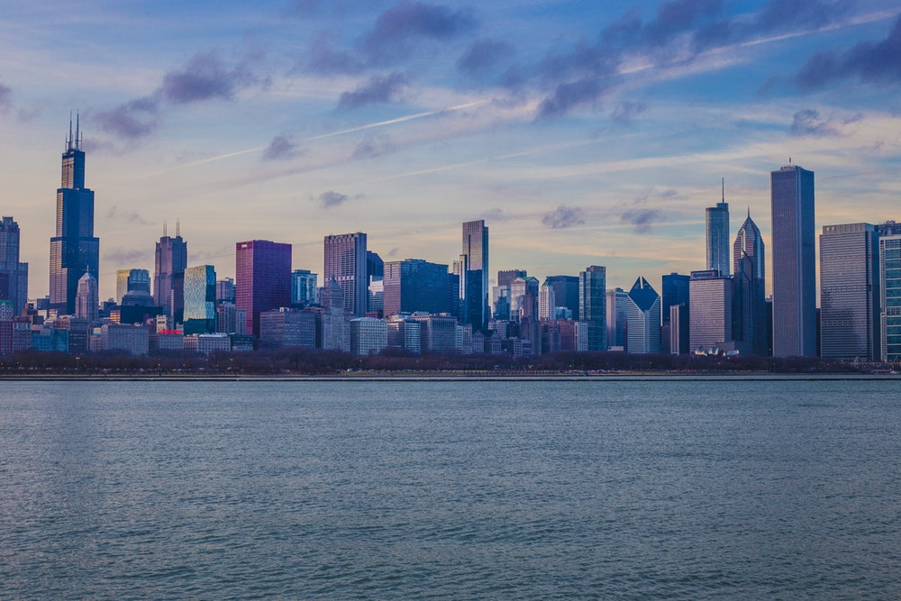

Our group set out to determine how stylistic elements on a photograph would affect the success of style transfer. First, we collected an assortment of different images. Then, using an image editing API called "Cloudinary", we increased the contrast, blurriness, brightness, saturation, sepia, and red tint on each image in increments of 10%. We then passed these images through a style transfer neural network using the style of Edvard Munch's "The Scream". We compiled these images into a gallery and observed the results, noting the impact of transformations on the style transfer results.

Introduction
Image Choices
We selected photographs that had a variety of different subject matters and colors. Some, like the maple, desert, and fire image, were selected to see how the neural network would handle photos of predominantly the same color and whether the neural network could distinguish between small details, despite the same color. The rainbow was selected for the opposite reason in order to observe how the neural network might style-transfer differently for various colors, despite their having the same texture and content. We also ensured that our photos had a variety of content, from cars and skylines to animals and humans.

{kind=link}
{kind=link}
{kind=link}
Style Transfer Network
For style transfer, we chose to use a Tensorflow based Convolutional Neural Network designed for fast style tranfer. This network had pretrained style models, allowing us to skip the arduous process of training a whole new style. Additionally, this network was quick, allowing us to stylize almost a thousand images in a little under two hours. We were able to edit some functions in the network to allow for programatic access to the evaluation file, rather than the default command line only accessibility. This let us create a python program that performed all the image transformations and style transfer automatically.

Blur
Generally, we noticed that an increase in blur had very little impact on the result of the style transfer. However, this was unsuprising, for even 100% blurriness had little impact on the actual image, as seen in this 100% blurred photo of a skyline.
Brightness
In general, brighter spots in photos seemed to turn into one particular part of the scream style after the style transfer -- specifically the red wave section.
In the rainbow, as the brightness percentage increased, a bright spot in the middle of the image appeared. After the style transfer, the bright spot transformed into red waves, perhaps indicating a correlation between brightness and the particular red wave portion of that style.
On the other hand, in even brighter photos such as the skyline, the brighter sections appeared to transform into a matte red/brown color. Perhaps a reasonable conclusion would be that pictures of medium brightness correlate with the red -wave style while pictures of much greater brightness that are almost white correlate with a matte red/brown color.
Contrast
We observed minimal difference in the original photos when contrast was increased and very little difference in the photos after style transfer. Even in the maple photo, where one would expect a greater contrast in the colors to result in a better style-transfer (as the leaves would be more easily distinguishable from each other), we observed little difference in the photos as contrast increased. Displayed are the stylizations of the low contrast and high contrast versions of the photo -- can you even tell a difference?
Saturation
We observed minimal difference in the original photos when saturation was increased, and naturally, very little difference in the photos after style transfer. Displayed are the stylized versions of the high saturation and low saturation photos, both of which look nearly identical.


Sepia
Overall, a minimal sepia modification appeared to make the photograph mostly yellow and a greater sepia modification made the photographs have a brown/red tint.
While the sepia modifications of lower percentages ended up creating an overall yellow filter and ended up erasing details in the photograph, the style transfer appeared to pick up the subtle contrasts in the photo and emphasized some details that were lost in the original sepia modification.
For example, while the baby sepia of 100% appeared to be mostly yellow, the style-transfer seemed to pick up on a greater contrast between the colors and brought out the shadows in the blanket behind the baby. On the other hand, with a 10% sepia, the entire photo appears to be mostly yellow and the blanket is barely distinguishable. In this case, a greater sepia transformation allowed the style-transfer to preserve details and pick up on a more contrast.
The creepy photo of the baby was the low sepia version, while the beautiful photo is the high sepia version. The positive impact of sepia was truly astounding.
Red Tint
As the red tint increases, the photos are filtered with a reddish color. This causes the style transfer to apply the wave feature to more areas of the photo, suggesting that waves are directly correlated with the color red. This makes sense, as the waves in the scream are mostly reddish. This would imply that style features in the network are actually accosiated with color. The top photo is a non tinted version of the beach photo, while the bottom photo is a highly red-tinted version of the photo. The wave feature appears far more frequently in the red tinted photo.